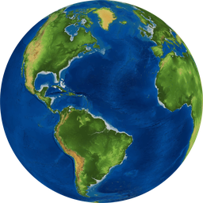

Leyenda
Add Data
El servidor debe permitir CORS. Si falla, descarga el archivo y súbelo en la pestaña «Archivo».
Formatos: GeoJSON · KML · KMZ · GPX · Shapefile (.zip con .shp, .dbf y .prj) · CSV/TXT con columnas lon/lat o este/norte (x/y).
Capas agregadas
Aún no hay capas agregadas.
Consultas
1. Consulta por atributo
2. Cruce espacial con límites
Asigna a cada elemento de una capa agregada el departamento, provincia y distrito donde se ubica, y suma esas columnas a su tabla.